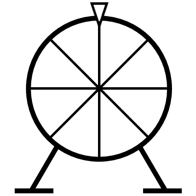
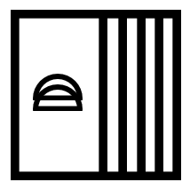

The Decision Makers: Four tools that will help you make decisions, either for a game, or for some real life situation. These decision makers include coin flip, dice roll, spinning wheel, and deck of cards.
Progess: Coin flip is functionally complete. Still needs to add a log of events and a tally of heads and tails flips. Moving onto dice roll afterwards.
 Coin Flip: Flip the coin to get heads or tails, 50% chance for either result. You can customize the coin's color and the images for heads and tails, as well as what heads or tails represent.
Coin Flip: Flip the coin to get heads or tails, 50% chance for either result. You can customize the coin's color and the images for heads and tails, as well as what heads or tails represent.
 Dice Roll: Roll a die to make a numbered decision. There is a wide selection of number-sided die, including 4, 6, 8, 12, and 20-sided dice, that you can freely choose from.
Dice Roll: Roll a die to make a numbered decision. There is a wide selection of number-sided die, including 4, 6, 8, 12, and 20-sided dice, that you can freely choose from.
Wheel Spin: Enter a list of items, spin the wheel, and let it choose an item for you. The user can either enter one item at a time or paste in multiple items separated by commas. Make no single item contains a comma or it will be seperated into many items.
Deck of Cards: Similar concept to the wheel spinner, except when a card is picked, it is removed from the deck. The user can choose to put it back into the deck at the end of the queue or leave it to the side.
To go back to the main page, simply click on the logo at the top left corner. This can be done on every page.